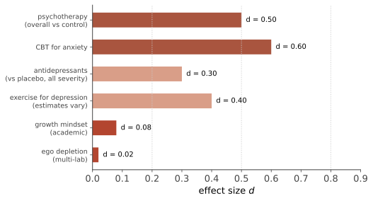

临床 II · 心理治疗：什么有效
这一页回答一个具体问题：心理治疗有效吗、什么有效、效应多大。答案总体乐观（心理治疗确实有效，且效应量与许多医学干预相当），但细节里有三个必须知道的复杂性：共同因素、渡渡鸟裁决、发表偏倚。
1. 主要流派与它们的技术
| 流派 | 核心假设 | 关键技术 |
|---|---|---|
| 认知行为（CBT） | 想法、情绪、行为互相驱动；回避维持问题 | 暴露、行为激活、认知重构、行为实验 |
| 第三浪潮（ACT、DBT、MBCT） | 改变与症状的关系而非内容 | 接纳、正念、辩证行为技能 |
| 精神动力学 | 无意识冲突与关系模式 | 自由联想、移情工作、洞察 |
| 人本/来访者中心 | 自我实现倾向 + 无条件积极关注 | 共情、真诚、反映 |
| 系统/家庭 | 问题在关系系统中 | 结构式、叙事式干预 |
| 药物（精神科医生） | 神经化学与网络 | SSRI/SNRI、心境稳定剂、抗精神病药 |
【稳】暴露疗法的机制：直接对准第 16 页那条"回避维持恐惧"的环路——在不逃避的情况下让消退学习发生（第 08 页的消退与自发恢复：所以要多情境、多次数暴露以防复发）。它是焦虑障碍、PTSD、OCD 治疗的核心成分，也是心理学基础研究直接兑现为临床技术的最佳案例。
2. 效应量地图（本页核心）

读这张图的四条注意：① 效应量估计依对照组类型而变（对比等待名单 > 对比安慰治疗 > 对比另一种真治疗）——"等待名单对照"会系统性高估；② 发表偏倚在心理治疗文献中确有证据，校正后效应量下降；③ 抗抑郁药与安慰剂的差距随基线严重程度增加（轻度抑郁差距很小、重度更明显）——这是过去十年最重要的临床争论之一；④ 药物 + 心理治疗在多种障碍上优于单一治疗。
3. 共同因素 vs 特定技术
渡渡鸟裁决（"人人都赢，都该得奖"）：多项 meta 分析发现不同"真"疗法之间的效应差异很小——这催生了共同因素理论：
【稳】共同因素：治疗联盟（治疗师-来访关系质量，是与结果关联最稳的单一变量之一）、期望与希望、治疗师胜任度与共情、提供合理解释框架、结构化的定期投入本身。
但特定技术并非无关【摇→稳】：暴露对恐惧症、ERP 对 OCD、CBT-I 对失眠、DBT 对边缘型人格障碍与自伤行为——这些特定匹配的优势在对照研究中稳定存在。综合结论：共同因素解释大部分效应，特定技术在特定障碍上提供可观的增量——两派之争的当代和解。
治疗师效应：不同治疗师之间的结果差异大于不同疗法之间的差异——"谁做"比"做什么流派"更重要，这条对选治疗师有直接指导意义。
4. 循证实践与需要警惕的部分
循证实践 = 最佳研究证据 + 临床专长 + 来访者价值观（三者缺一不可，不是"照手册操作"）。
【摇→倒】证据薄弱或有害的做法：危机事件应激晤谈（CISD，单次强制性创伤复述——部分研究显示可能有害）、"恢复被压抑记忆"的暗示性技术（第 09 页）、转化治疗（【倒】且有害，主流专业组织明确反对）、多数商业化"人格类型"指导（第 14 页）。
数字化与新形态：【稳】 引导式互联网 CBT（有人类支持的 iCBT）效果接近面对面；【摇】 纯自助 app 的脱落率极高、平均效应小；【新，证据早期】 AI 聊天机器人辅助心理健康——2025 年有 RCT 显示生成式治疗机器人对抑郁焦虑症状有改善（Therabot 试验），但样本、盲法与长期安全（危机识别、依赖、不当建议）证据都还很初步；多个监管与专业机构已就"AI 冒充治疗师"发出警示（🔗 第 20 页详述）。
危机与安全：本站不做危机干预指导；遇到自伤或伤人风险，请立即联系专业危机服务或急诊。
5. 反直觉清单
- "倾诉一定有好处"不总成立：单次强制复述创伤可能有害（见上）；结构化的表达性写作则有小到中等益处（第 13 页）——形式与时机决定方向；
- 好转不等于疗法有效：均值回归（人们在最糟时求助，之后自然回升）与安慰剂效应会伪装成疗效——这就是为什么等待名单对照不够、需要主动对照；
- 心理治疗也有副作用（约 5–10% 的来访出现恶化），但报告与监测远不如药物试验规范——这是该领域方法学的公开短板。
下一页：把镜头从"治病"拉到"过得好"——压力、健康与幸福的科学。